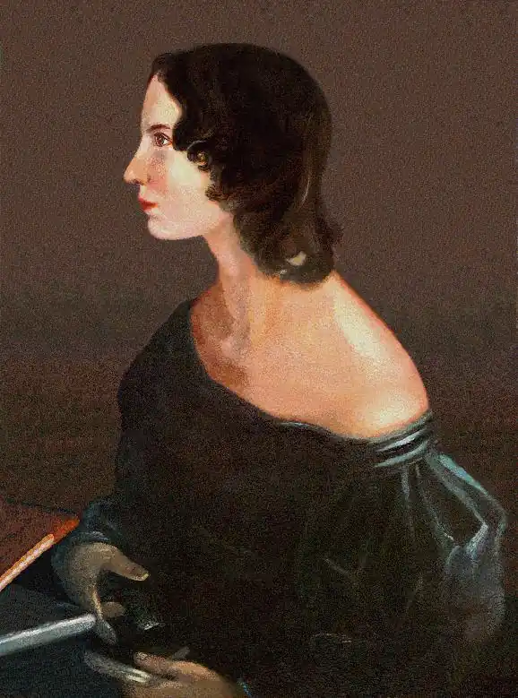

Емілі Бронте (1818-1848) — англійська поетеса, автор роману "Грозовий перевал" (Wuthering Heights).
Емілі була п'ятою дитиною з шести дітей родини Бронте. Коли вона втратила матір в 1821 році, і двох своїх старших сестер, вона разом з Енн, Шарлоттою та братом Бренуеллом стали згуртованою і унікальною командою. Вони не відвідували школу, у них не було друзів, вони жили в глухому селі. Ігровим майданчиком їм служили торфовища, які виднілися з відкритих вікон будинку, та їх власна фантазія.
Емілі практично не мала можливості отримати освіту, на відміну від своїх сестер. Вона провела півроку в школі Clergy Daughters в селі Кован-Брідж, коли їй було 6 років; три місяці в Roe Head School, в містечку Дьюсбери, у віці 17 років; і ще дев'ять місяців в пансіонаті Еже в Брюсселі у віці 24-25 років. Прогалини в освіті вона заповнювала, навчаючись вдома з тіткою Бренуелл і сестрою Шарлоттою. Вчителі малювання і музики іноді відвідували їх парафіяльний будиночок (Емілі була талановитою піаністкою), проте велику частину навчання їй довелося отримати у свого батька. Містер Бронте заохочував різнобічне читання своїх дочок, і дискутував з ними як з дорослими, на теми політики і літературної критики. Єдиною оплачуваною роботою, яку прийняла Емілі, було вчителювання у школі Law Hill недалеко від Халіфакс в 1838 році, яке продовжилося півроку. Емілі Бронте була щаслива лише вдома — їй подобалося поратися по господарству, і вона насолоджувалася товариством старшої із слуг, Табіти Ейкроуд. Також як сестри і брат Бренуелл, Емілі стала письменницею з того моменту, як навчилася читати. Разом з Енн вони писали вірші та історії про вигаданий світ Гондал. Тільки деякі вірші з розповідей про Гондал збереглися, але відомо, що їх спільна творчість продовжувало жити до початку 1840 р. Емілі менше всіх бажала, щоб збірник віршів Братів Белл був опублікований, і навіть після публікації "Грозового перевалу", вона відмовилася скласти компанію своїм сестрам в мандрівці до Лондона з метою відкрити світу правду про те, що за псевдонімом Белл ховаються три освічені жінки. На відміну від інших дітей Бронте, Емілі була висока і міцна статурою. Вона була найбільш жвавим членом родини, проте, незважаючи на її прозорливість, у неї не було друзів. Ніякої особистої переписки від неї не збереглося, і навіть ті відомості, які тепер з'являються про Емілі, завжди занадто суперечливі. Вона обожнювала домашніх тварин, хоча володіла шаленим темпераментом, і тримала їх у суворості. Вона уникала всіх окрім родичів, і її риси характеру яскраво представлені в персонажах її творів. Її поезія глибоко релігійна, незважаючи на те, що вона відмовилася отримувати релігійну освіту. У вересні 1848 Емілі застудилася на похоронах брата і через два місяці померла від швидкоплинних сухот.